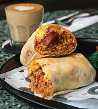

My Recipe
Introduction
For my recipe, I chose to make a burrito, which comes from Mexico, rooting back to thousands of years ago. A burrito usually consists of at least: a flour tortilla, a meat filling, salsa, cheese, beans and rice.

Ingredients
- 1 lb lean ground beef
- 1 ounce or one packet of taco seasoning mix
- 1 ½ cups beans
- ¾ cup corn kernels
Instructions
- Preheat oven to 350°C
- Cook beef with taco seasoning
- Spread ¼ cup beans on your tortilla. Top with ½ cup rice, beef, 2 tablespoons corn, and ¼ cup cheese.